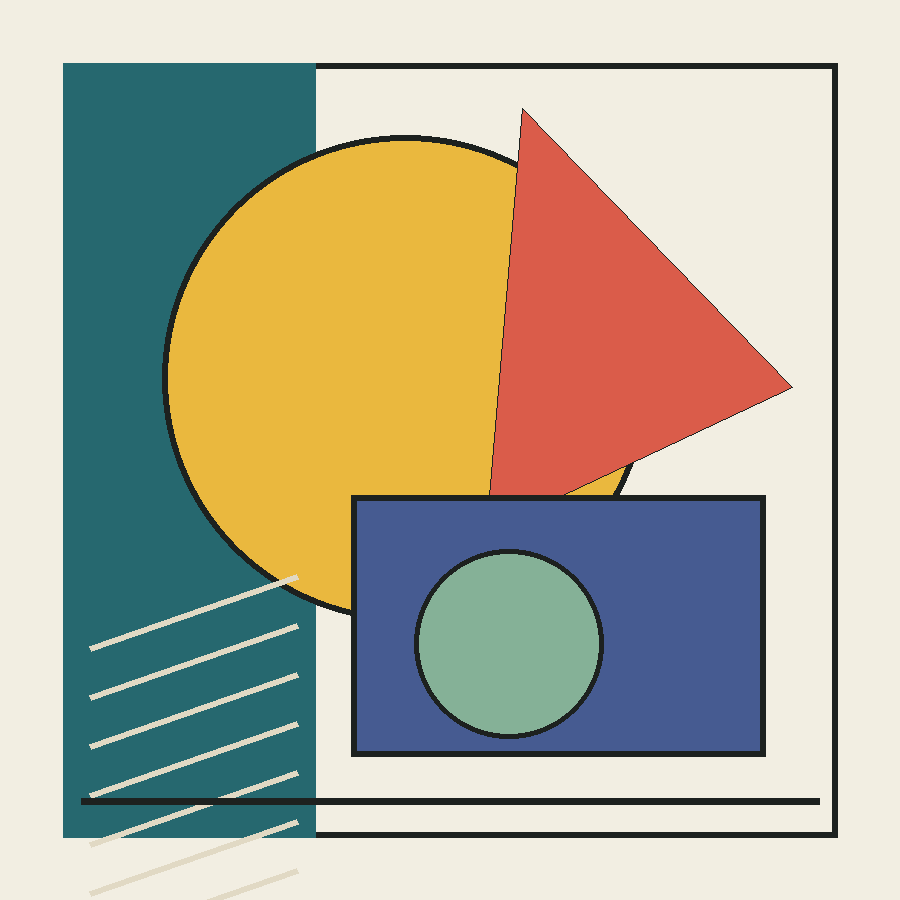
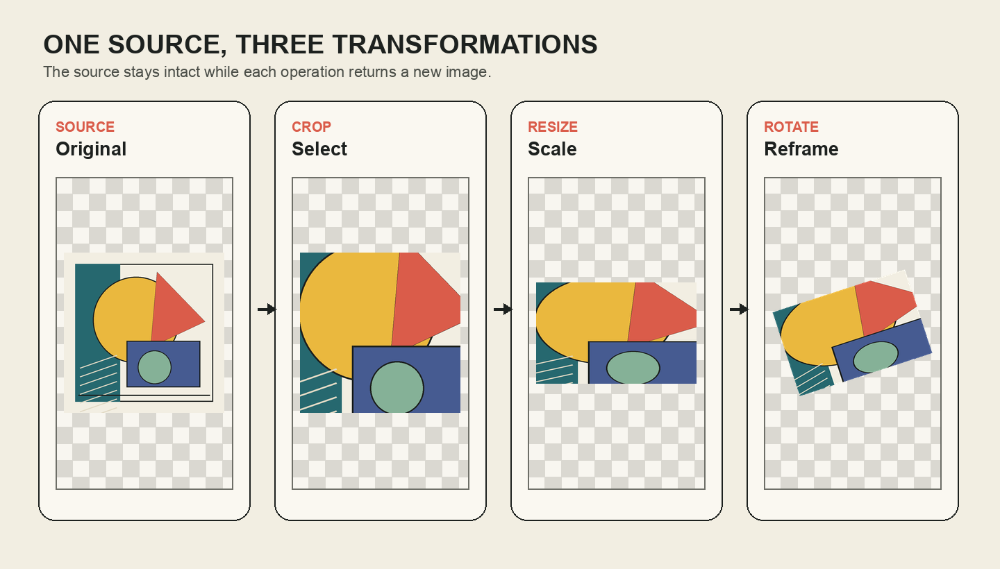

한 장의 출력물을 다시 사용할 수 있는 시각 재료로 바꾸기
- FORMAT
- 50 MIN + 10 MIN EXTENSION (기본 50분 / 확장 60분)
- CORE
- 원본 보존, 자르기, 크기 변경, 회전
- NEXT
- 변형한 작업본을 RGBA 레이어로 합성하기
오늘의 학습 목표
- 컴퓨터에 저장된 이미지 파일과 Python이 다루는
Image객체의 차이를 설명할 수 있습니다. Image.open()과copy()를 사용해 원본과 작업본을 분리하는 이유를 설명할 수 있습니다.crop()의 네 좌표를 왼쪽·위·오른쪽·아래 경계로 읽을 수 있습니다.resize()에서 가로세로 비율이 달라질 때 생기는 왜곡을 예측할 수 있습니다.rotate()의 각도와expand=True가 결과 이미지의 경계에 미치는 영향을 구분할 수 있습니다.- 원본, 작업본, 결과물의 변수와 파일명을 분리한 안전한 변형 순서를 작성할 수 있습니다.
- 0-5 min6주차 연결
함수의 출력을 다음 작업의 입력으로 다시 해석합니다.
- 5-14 min파일과 객체
열기, 모드 변환, 복사와 원본 보존의 흐름을 읽습니다.
- 14-25 min자르기
네 경계 좌표로 필요한 영역을 선택하고 공식 사례를 분석합니다.
- 25-35 min크기 변경
픽셀 크기, 비율, 리샘플링을 결과와 연결합니다.
- 35-44 min회전
각도, 확장된 경계, 투명 여백을 비교합니다.
- 44-50 min안전한 파이프라인
전체 순서와 대표 오류를 점검하고 핵심 문장을 정리합니다.
수업 운영: 기본 50분과 확장 60분
기본 50분에서는 6주차 연결, 파일과 객체, 자르기, 크기 변경, 회전, 오류 확인까지 진행합니다. 설명과 확인 문제가 빠르게 끝난 경우에만 본문 마지막의 50-60분 확장에서 하나의 원본으로 서로 다른 세 편집안을 비교합니다. 확장 활동은 새로운 문법을 추가하지 않습니다.
코드를 처음 보는 학생을 위한 읽기 순서
- 명령을 찾습니다. 점 뒤의
crop,resize,rotate가 이번 줄의 행동입니다. - 대상을 찾습니다. 점 앞의 변수는 그 행동을 적용할 이미지입니다.
- 괄호 안 값을 찾습니다. 어느 부분, 어느 크기, 몇 도처럼 행동의 조건을 정합니다.
- 등호 왼쪽을 확인합니다. 명령이 만든 새 이미지를 어느 변수에 기억하는지 확인합니다.
- 실행 전 크기를 말합니다. 입력과 출력의 예상 크기를 적으면 좌표 오류를 빨리 발견할 수 있습니다.
0-5분 · 6주차의 출력은 7주차의 입력이다
6주차에는 create_poster()라는 함수를 만들고 서로 다른 매개변수를 넣어 세 장의 PNG를 저장했습니다. 6주차에서는 그 PNG가 출력이었습니다. 7주차에서는 같은 파일을 Image.open()으로 불러와 다음 과정의 입력으로 사용합니다. 프로그래밍의 결과는 끝점이 아니라 다음 작업의 재료가 될 수 있습니다.

완성품 대신 재료로 보기
위 이미지에서 다시 사용할 수 있는 부분 세 곳을 손으로 가리킵니다. 전체 구도를 유지해야 한다고 생각하지 말고, 원의 일부, 선의 밀도, 색의 경계처럼 작은 단위를 찾습니다.
6주차 결과물이 없으면 7주차 실습을 할 수 없는가?
할 수 있습니다. 3교시 노트북이 수업용 대체 이미지를 자동으로 만듭니다. 자신의 6주차 PNG가 있으면 업로드하여 바꾸어 사용할 수 있지만, 어떤 원본을 선택했는지는 완료 판정에 영향을 주지 않습니다.
5-14분 · 파일과 Image 객체를 구분하기
이미지 파일은 컴퓨터나 Colab 저장 공간에 있는 .png, .jpg 자료입니다. 경로와 파일명을 통해 찾습니다. 반면 Image 객체는 Python이 현재 메모리에서 다룰 수 있도록 읽어 놓은 이미지입니다. 파일을 서랍 속 종이라고 본다면, 객체는 책상 위에 펼쳐 놓은 작업본에 가깝습니다.
| 구분 | 어디에 있는가? | 무엇으로 확인하는가? | 대표 동작 |
|---|---|---|---|
| 파일 | 저장 장치 또는 Colab 세션 | 경로와 파일명 | 열기, 저장하기, 다운로드하기 |
Image 객체 | 실행 중인 Python 메모리 | 변수 이름, .size, .mode | 자르기, 크기 변경, 회전하기 |
from PIL import Image
source_path = "week06_my_poster.png"
with Image.open(source_path) as opened_image:
source_image = opened_image.convert("RGBA")
working_image = source_image.copy()Image.open(source_path)는 경로에 있는 파일을 엽니다. convert("RGBA")는 뒤의 합성 과정에서 투명도를 사용할 수 있도록 색상 모드를 통일합니다. copy()로 만든 working_image는 작업본이고, source_image는 비교를 위해 보존하는 원본입니다. 이후 저장할 결과물도 다른 파일명으로 구분합니다.
변수 이름이 원본을 보호해 주는 것은 아니다
original이라는 이름을 붙여도 그 변수에 새 결과를 다시 대입하면 이전 상태를 잃습니다. 보호는 이름의 느낌이 아니라 copy(), 다른 변수, 다른 저장 파일명이라는 실제 구조로 만듭니다.
확인: open()과 save()는 같은 행동인가?
아닙니다. open()은 저장된 파일을 Python이 다룰 수 있는 객체로 읽는 행동이고, save()는 메모리의 객체를 파일로 기록하는 행동입니다. 읽기와 쓰기의 방향이 반대입니다.
확인: 왜 처음부터 JPG가 아니라 RGBA로 바꾸는가?
이번 주에는 회전 뒤의 투명한 여백과 여러 레이어의 투명도를 사용합니다. RGBA는 빨강·초록·파랑 값에 알파 값을 더해 투명도를 표현할 수 있습니다. JPG 파일 자체는 투명 배경을 저장하지 못합니다.
14-25분 · crop()으로 필요한 영역 선택하기
crop()은 이미지를 임의로 찢는 명령이 아니라, 사각형 경계 안의 픽셀을 선택해 새 이미지로 만드는 명령입니다. 경계 상자는 (left, top, right, bottom), 즉 왼쪽·위·오른쪽·아래 순서로 읽습니다.
crop_box = (170, 170, 730, 730)
cropped_image = working_image.crop(crop_box)| 값 | 뜻 | 선택되는 범위 |
|---|---|---|
left = 170 | 왼쪽 경계 | x = 170부터 시작 |
top = 170 | 위쪽 경계 | y = 170부터 시작 |
right = 730 | 오른쪽 경계 | x = 730 직전까지 |
bottom = 730 | 아래쪽 경계 | y = 730 직전까지 |
선택 결과의 너비는 right - left = 560, 높이는 bottom - top = 560입니다. 오른쪽 값은 왼쪽 값보다, 아래쪽 값은 위쪽 값보다 커야 합니다. 네 숫자를 한꺼번에 바꾸지 않고 먼저 왼쪽과 위를 정한 뒤, 원하는 너비와 높이를 더하는 방식이 안전합니다.

공식 사례: 사진을 다시 배열해 새로운 문맥 만들기
포토몽타주는 서로 다른 사진 조각을 자르고 결합해 하나의 이미지를 구성하는 방식입니다. MoMA의 공식 용어 페이지에는 여러 포토몽타주 작품과 작가가 정리되어 있습니다. 특히 한나 회흐는 대중매체의 이미지와 문자를 잘라 재결합하며 기존 이미지의 문맥을 비판적으로 바꾸었습니다.
MUSEUM TERM
MoMA: Photomontage ↗
실제 작품을 보며 무엇을 잘랐는지만 찾지 않습니다. 조각의 크기, 방향, 이웃 관계가 원래 이미지의 의미를 어떻게 바꾸는지 관찰합니다.
- 선택
- 어느 부분을 남겼는가?
- 변형
- 크기와 방향을 어떻게 바꾸었는가?
- 관계
- 어떤 조각과 새롭게 만나는가?
ARTIST CASE
MoMA: Hannah Höch ↗
회흐의 작업에서 조각은 단순한 장식이 아니라 사회와 매체를 다시 읽는 단위였습니다. 우리 실습도 기능을 확인하는 데서 멈추지 않고 “무엇을 강조하려고 이 부분을 선택했는가?”를 묻습니다.
확인: crop_box의 오른쪽 값을 작게 만들면 무엇이 바뀌는가?
왼쪽 경계가 그대로라면 선택 영역의 너비가 줄어듭니다. 오른쪽 값이 왼쪽 값보다 작거나 같아지면 유효한 너비를 만들 수 없으므로 좌표 순서를 다시 확인해야 합니다.
25-35분 · resize()로 픽셀 크기와 비율 바꾸기
resize()는 출력 이미지의 가로와 세로 픽셀 수를 직접 정합니다. resize((420, 420))는 너비 420픽셀, 높이 420픽셀의 새 이미지를 만듭니다. 원본의 가로세로 비율과 목표 크기의 비율이 다르면 형태가 늘어나거나 눌려 보입니다.
target_size = (420, 420)
resized_image = cropped_image.resize(
target_size,
Image.Resampling.LANCZOS,
)Image.Resampling.LANCZOS는 크기를 줄이거나 늘릴 때 주변 픽셀을 참고하여 새 픽셀을 계산하는 방식입니다. 이 이름을 외울 필요는 없습니다. “크기가 바뀌면 픽셀을 다시 계산해야 하며, 여기서는 이미지 축소에 적합한 준비된 방식을 선택한다”라고 이해하면 충분합니다.
| 목표 크기 | 목표 비율 | 예상 결과 |
|---|---|---|
(800, 600) | 4:3 | 원래 비율 유지 |
(800, 800) | 1:1 | 세로 방향으로 늘어나 보임 |
(800, 400) | 2:1 | 세로 방향으로 눌려 보임 |
왜곡은 항상 오류가 아닙니다. 의도적으로 길게 늘여 긴장감을 만들 수도 있습니다. 중요한 것은 결과를 모르고 비율을 바꾸는 것과, 예상한 효과를 위해 비율을 선택하는 것을 구분하는 일입니다.
확인: 비율을 유지하며 너비를 절반으로 줄이려면?
원래 크기가 800 × 600이라면 너비와 높이에 같은 배율 0.5를 적용해 400 × 300으로 만듭니다. 너비만 절반으로 줄이고 높이를 그대로 두면 비율이 달라집니다.
35-44분 · rotate()로 방향과 경계 바꾸기
rotate()의 양수 각도는 기본적으로 반시계 방향 회전입니다. rotate(18)은 이미지를 18도 돌립니다. 회전한 모서리가 기존 사각형 경계를 넘어가므로 expand=True로 결과를 담을 새 경계를 넓혀야 잘리지 않습니다.
rotated_image = resized_image.rotate(
18,
expand=True,
resample=Image.Resampling.BICUBIC,
fillcolor=(0, 0, 0, 0),
)18: 반시계 방향으로 18도 회전합니다.expand=True: 회전한 전체 형태가 들어오도록 결과 경계를 확장합니다.BICUBIC: 비스듬한 가장자리의 픽셀을 다시 계산합니다.fillcolor=(0, 0, 0, 0): 새로 생긴 바깥 영역을 완전 투명하게 둡니다.
same boundary
결과의 가로·세로 크기는 유지되지만 회전한 모서리가 경계 밖에서 잘릴 수 있습니다.
larger boundary
회전한 전체 형태를 담기 위해 결과 이미지의 가로·세로 크기가 달라질 수 있습니다.
확인: rotate 후 레이어 크기가 예상보다 커진 이유는?
expand=True가 기울어진 네 모서리를 모두 담을 수 있도록 새 사각형 경계를 계산했기 때문입니다. 그림 자체가 무작정 확대된 것이 아니라, 그림 주변의 투명 영역을 포함하는 상자가 커진 것입니다.
44-50분 · 원본에서 결과물까지 안전하게 연결하기
각 명령을 따로 이해했다면 이제 순서를 연결합니다. 아래 코드는 원본 파일을 열어 RGBA로 통일하고, 작업본을 만든 뒤 자르기·크기 변경·회전을 차례로 적용해 새 파일명으로 저장합니다.
from PIL import Image
source_path = "week06_my_poster.png"
result_path = "week07_transformed_layer.png"
with Image.open(source_path) as opened_image:
source_image = opened_image.convert("RGBA")
working_image = source_image.copy()
cropped_image = working_image.crop((170, 170, 730, 730))
resized_image = cropped_image.resize(
(420, 420),
Image.Resampling.LANCZOS,
)
result_image = resized_image.rotate(
18,
expand=True,
fillcolor=(0, 0, 0, 0),
)
result_image.save(result_path)| 보이는 문제 | 가능한 원인 | 먼저 확인할 것 |
|---|---|---|
FileNotFoundError | 경로 또는 파일명이 실제 파일과 다름 | Colab 파일 목록과 source_path 철자 |
UnidentifiedImageError | 이미지 파일이 아니거나 손상된 파일을 열려고 함 | 확장자와 파일이 정상적으로 열리는지 확인 |
| 자른 결과가 비어 보임 | 좌표가 원본 바깥에 있거나 경계 순서가 뒤바뀜 | left < right, top < bottom |
| 형태가 찌그러짐 | 원본과 목표의 가로세로 비율이 다름 | 원본 .size와 target_size |
| 회전한 모서리가 잘림 | expand=True를 생략함 | rotate()의 인자 |
| 저장 파일이 이전 결과임 | 값을 바꾼 뒤 저장 셀을 다시 실행하지 않음 | 변형 셀 다음 저장 셀 실행 여부 |
한 줄씩 결과 예측하기
crop((100, 200, 500, 700))의 결과 크기를 적습니다.resize((300, 500))뒤에 무엇이 반드시 300 × 500이 되는지 적습니다.rotate(30, expand=True)에서 결과 경계가 달라질 수 있는 이유를 적습니다.
출구 확인 기준 답안
자른 결과는 너비 400, 높이 500픽셀입니다. resize((300, 500)) 뒤의 이미지 객체 크기가 300 × 500이 됩니다. 회전한 네 모서리를 자르지 않고 모두 담기 위해 새 경계를 계산하므로 결과 크기가 달라질 수 있습니다.
수업 후 개별 복습
1. source_image와 working_image가 같은 픽셀로 시작해도 두 이름을 쓰는 이유는?
현재 내용은 같지만 역할이 다르기 때문입니다. source_image는 비교 기준으로 보존하고, working_image는 이후 변형의 출발점으로 사용합니다. 역할을 분리하면 어느 단계에서 결과가 달라졌는지 추적하기 쉽습니다.
2. crop((40, 60, 340, 260))의 크기는?
너비는 340 - 40 = 300, 높이는 260 - 60 = 200이므로 300 × 200픽셀입니다.
3. resize는 원본 픽셀을 그대로 옮기기만 하는가?
아닙니다. 목표 크기의 픽셀 격자가 달라지므로 기존 픽셀을 참고해 새 픽셀 값을 계산합니다. 그래서 리샘플링 방식을 함께 지정합니다.
4. 회전 뒤 검은 삼각형이 생기면 무엇을 확인하는가?
이미지가 RGBA 모드인지, fillcolor=(0, 0, 0, 0)처럼 알파가 0인 투명색을 사용했는지 확인합니다.
50-60분 · 같은 원본으로 세 편집안 비교하기
확장 시간에는 원본을 바꾸지 않고 자르기 영역, 목표 크기, 회전 각도만 달리한 세 안을 비교합니다. 먼저 결과를 예측하고 시각 자료를 다시 본 뒤 어떤 안이 다음 교시의 합성 레이어로 적합한지 선택합니다.
| 시간 | 활동 | 남겨야 할 결과 |
|---|---|---|
| 50-52분 | 정사각형 자르기, 가로로 긴 자르기, 작은 세부 자르기를 선택 | 세 crop_box 초안 |
| 52-55분 | 각 결과의 비율과 목표 크기를 계산 | 입력·출력 크기 표 |
| 55-58분 | -15도, 0도, 20도 회전 결과를 예측 | 잘림과 투명 여백 예상 |
| 58-60분 | 다음 교시의 앞·중간·뒤 레이어 역할 선택 | 선택 이유 한 문장 |
1교시 핵심 문장
이미지 변형은 원본을 없애는 과정이 아니라, 원본에서 선택한 픽셀을 새 크기와 방향의 작업본으로 만드는 과정입니다.
2교시 예고
서로 다른 세 작업본을 만들었다면 이제 하나의 1000 × 1000 화면에 놓아야 합니다. 다음 교시에는 RGBA의 알파 값, 레이어의 위치와 순서, 출처 기록을 연결해 합성의 원리를 배웁니다.
참고 자료
- Pillow 공식 문서: Image 모듈open, copy, crop, resize, rotate와 이미지 객체가 새 결과를 만드는 방식의 공식 설명
- Pillow 공식 핸드북: Concepts이미지 모드, 크기, 좌표계와 색상 값의 기본 개념
- MoMA: Photomontage포토몽타주와 관련 작품을 확인할 수 있는 미술관 공식 용어 페이지
- MoMA: Hannah Höch이미지와 문자를 재결합한 포토몽타주 작업의 공식 작가 소개와 소장품 기록